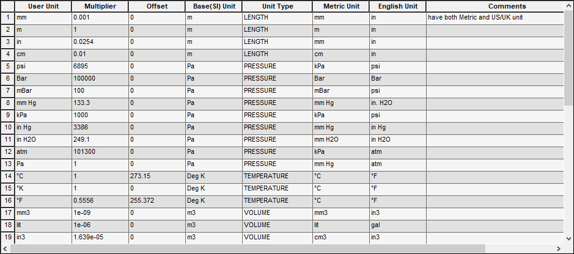
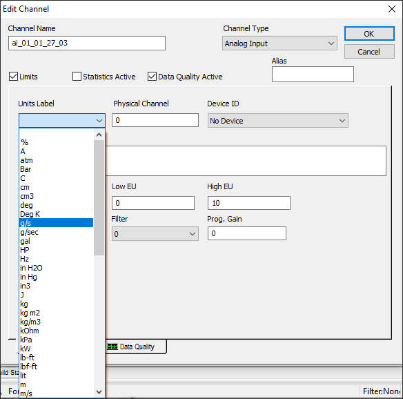
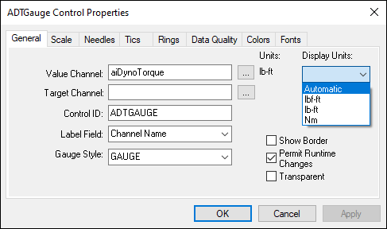
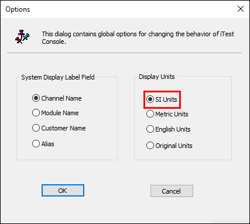

iTest User's Guide
Unit Conversions is used to display channel values in different units than originally set in the channel definition file. This allows an end user to view channel values in other units of measurement without having to edit the channel definition file, perform multiple calculations, or define multiple instances of the same channel. This feature also allows the end user to convert all displayed channel values to the same system of measurements with ease.
The primary interface is the Units Definition screen in Test Manager. This screen allows you to define units for all measurement types, along with the multiplier and offset to convert from one unit type to another.
Units Definition Screen

This display allows the creation of all usable units within iTest. A unit definition consists of the following:
Unit Definition Descriptions
| Column Name | Description |
| User Unit | The actual string that represents the unit. |
| Multiplier | The multiplier to go from this unit to SI units for that unit type. |
| Offset | The offset to go from this unit to SI units for that unit type. |
| Base (SI) Unit (this auto-populates when the Unit Type is selected) |
This is defined by iTest and is not configurable. For each unit type, a base (SI) unit is defined by the system. Any conversions you specify must be for converting to SI units. Units Conversion uses this defined base (SI) unit as the basis for all conversions. |
| Unit Type | The unit type that this unit represents. These unit types are defined by iTest and are not configurable. |
| Metric Unit | The metric equivalent of this unit. |
| English Unit | The English equivalent of this unit. |
| Comments | Comment field. |
Once the units are defined they can be used in channel definitions. When defining a channel, units are defined for that channel in the channel editor:
Edit Channels Dialog

When the channel unit is known by iTest, iTest can then handle converting the units when the operator selects a different unit display at runtime. If a unit's string is not recognized by iTest, then conversions will not be able to be performed at runtime on this channel value.
When setting up display objects, the objects for ADTGauge, ADTBar, ADTDigitalIndicator and ADTChartPlus all contain a field called Display Units. This field contains a list of valid units to convert to depending on the selected channel’s Unit Type (i.e., temperature, pressure, etc.). There is also an Automatic selection that forces the display object to display the channel’s values in whatever the current preferred units are at runtime. This Automatic selection is the default for new objects.
Display Units

To change the displayed units for different display objects at runtime, use the Tools/Options menu item from iTest Console and change the units to the desired setting.
Updated Units

This will cause all display objects with Display Units set to "Automatic" to convert their values to the selected system of units.
 |
CAUTION: | If iTest is connected to LabCentral, then the unit definitions will be downloaded from LabCentral automatically when a change is made to the Units Table in LabCentral. This feature cannot be turned off and can cause any work you do locally on the units editor to be lost. |